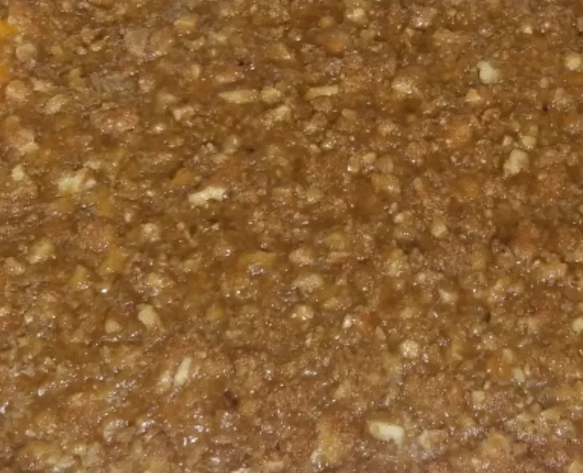

Candied Yams Casserole with Pecans

Description:
This candied yams casserole with pecans is a sweet and savory dish that combines tender yams with a rich, buttery glaze and crunchy pecans. It's the perfect side dish for any holiday meal or family gathering.
Ingredients:
- 4 cups sliced yams (sweet potatoes)
- 1/2 cup unsalted butter, melted
- 1/2 cup brown sugar
- 1/4 cup maple syrup
- 1 teaspoon ground cinnamon
- 1/4 teaspoon ground nutmeg
- 1/4 teaspoon salt
- 1 cup chopped pecans
Steps:
- Preheat your oven to 350°F (175°C).
- In a large mixing bowl, combine the melted butter, brown sugar, maple syrup, cinnamon, nutmeg, and salt. Mix until well combined.
- Add the sliced yams to the bowl and toss them in the glaze until they are evenly coated.
- Transfer the glazed yams to a greased 9x13 inch baking dish and spread them out in an even layer.
- Sprinkle the chopped pecans evenly over the top of the yams.
- Bake in the preheated oven for 30-35 minutes, or until the yams are tender and the pecans are toasted.
- Remove from the oven and let it cool slightly before serving. Enjoy!
Back to Home